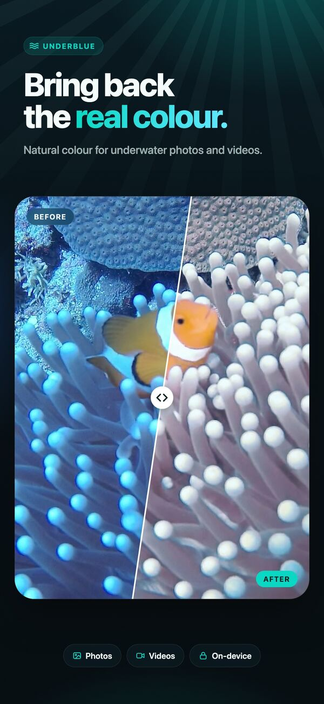
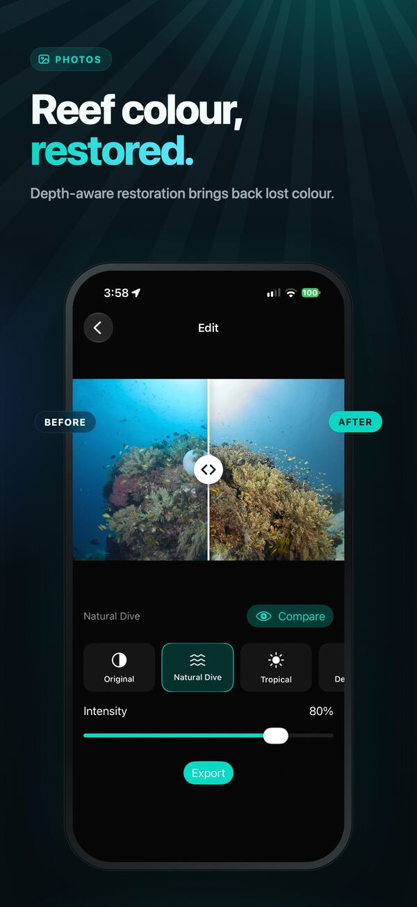
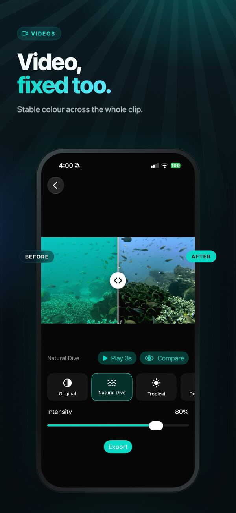
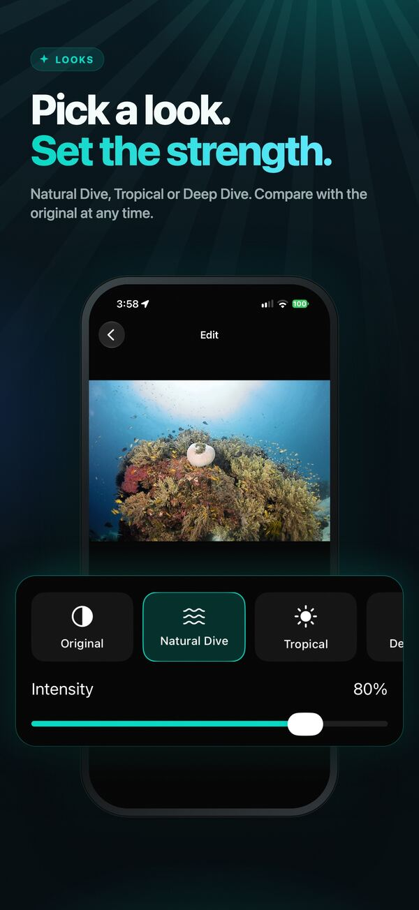
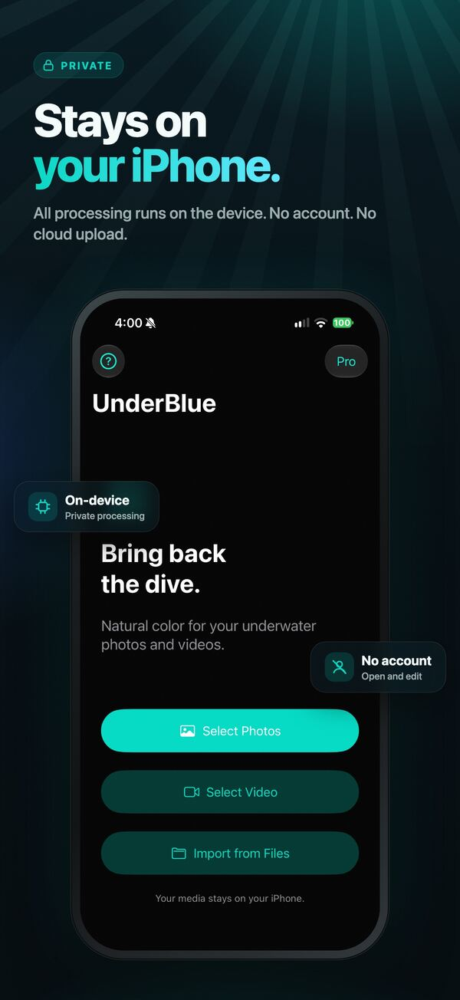
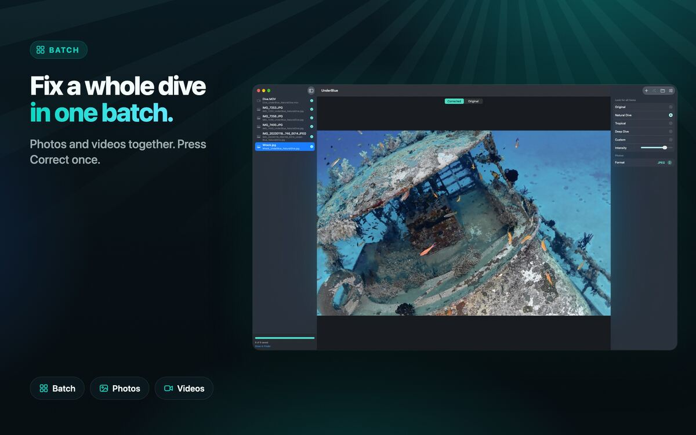
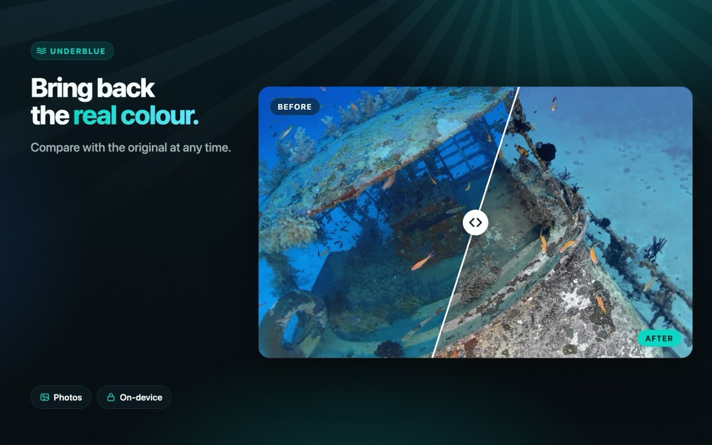
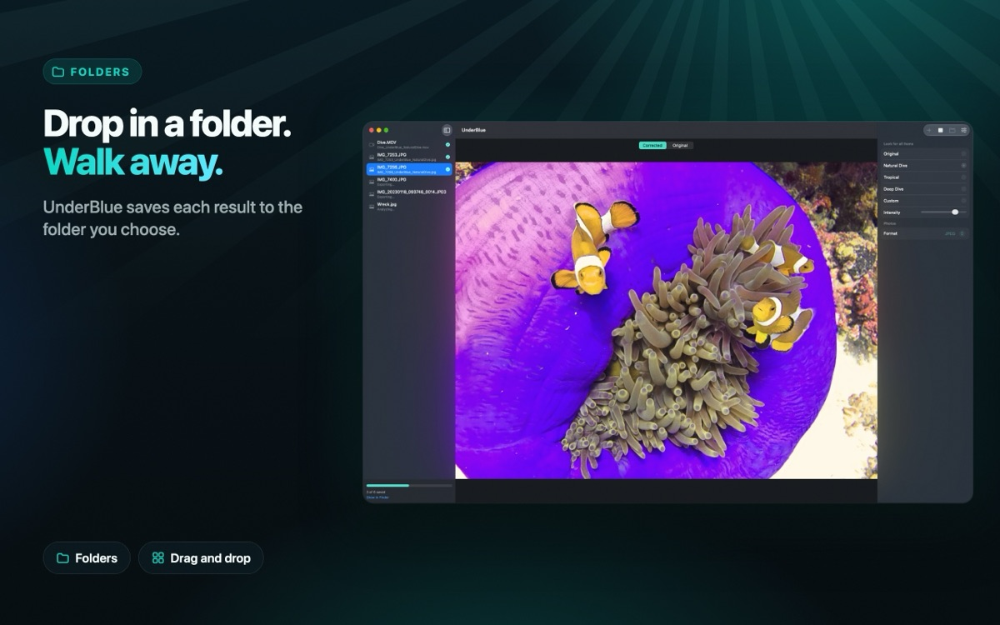
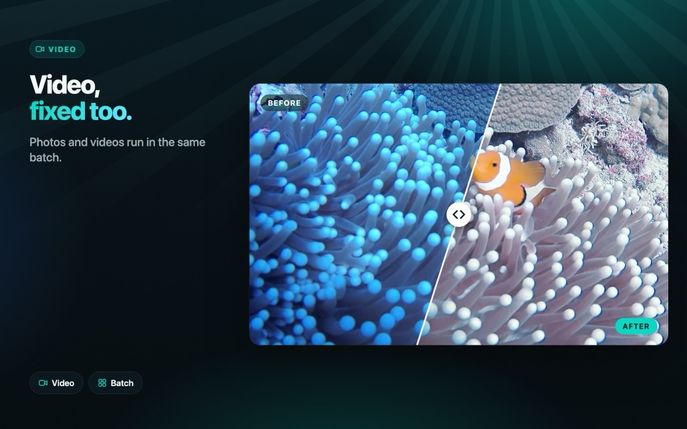
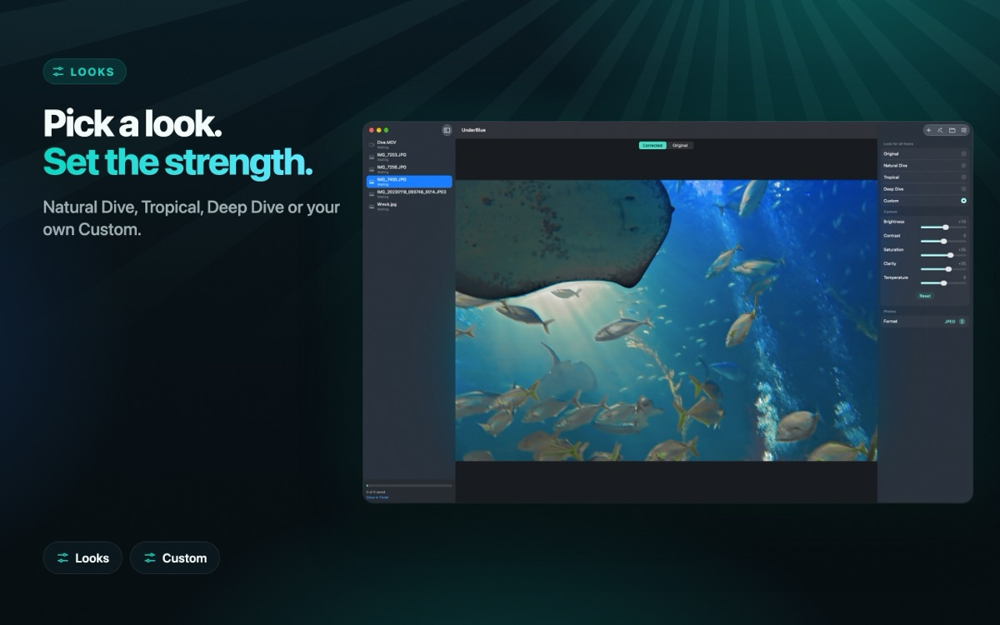

Underwater colour, restored
Bring natural colour and clarity back to underwater photos and videos with private, depth-aware processing on your iPhone.
Also on Mac: fix a whole dive in one batch →

UnderBlue brings believable colour and clarity back to underwater photos and videos.
Choose a photo or video, pick a look, and compare it with the original. Adjust the look's intensity, or use Custom to set brightness, contrast, saturation, clarity and temperature yourself. Behind the scenes, UnderBlue uses depth-aware underwater restoration to reduce colour loss and backscatter while keeping the result natural and temporally stable.





Features
- Natural Dive, Tropical and Deep Dive looks
- Custom look with five adjustment sliders
- Depth-aware photo and video restoration
- Temporally stabilized video correction
- Original-resolution and 4K video export with UnderBlue Pro
- SDR and supported HLG/PQ HDR video output
- HDR photo export with a gain map, with UnderBlue Pro
- Import from Photos, from Files (camera RAW included) or from the share sheet
- Original frame rate, timing, orientation and audio preservation
- Fully on-device processing with no account or cloud upload
Underwater photo and video guides
 Underwater photo tips: clearer, more colorful shotsSimple tips for better underwater photos with a phone or camera. Get close, use good light, avoid backscatter, and fix the color after the dive.
Underwater photo tips: clearer, more colorful shotsSimple tips for better underwater photos with a phone or camera. Get close, use good light, avoid backscatter, and fix the color after the dive. Underwater video tips: smooth, steady and colorfulHow to film better underwater video with a phone or action camera. Move slowly, hold steady, keep clips short, stay close, and fix the color after the dive.
Underwater video tips: smooth, steady and colorfulHow to film better underwater video with a phone or action camera. Move slowly, hold steady, keep clips short, stay close, and fix the color after the dive. How to use a smartphone underwater housingHow to use a phone housing for snorkeling and diving. Why a water-resistant phone is not enough, how to check for leaks, and how to get better photos and videos.
How to use a smartphone underwater housingHow to use a phone housing for snorkeling and diving. Why a water-resistant phone is not enough, how to check for leaks, and how to get better photos and videos. Action camera under water: what to check before you diveBefore you take an action camera under water, check the depth rating, seals, fog, battery and color filters. Then fix the color of your footage on iPhone.
Action camera under water: what to check before you diveBefore you take an action camera under water, check the depth rating, seals, fog, battery and color filters. Then fix the color of your footage on iPhone. AquaColorFix, Dive+ and UnderBlue: underwater color apps comparedA fair comparison of three iPhone apps that fix underwater color: AquaColorFix, Dive+ and UnderBlue. Features, pricing model and privacy, from the App Store.
AquaColorFix, Dive+ and UnderBlue: underwater color apps comparedA fair comparison of three iPhone apps that fix underwater color: AquaColorFix, Dive+ and UnderBlue. Features, pricing model and privacy, from the App Store.
Try it free
Try it free, with an UnderBlue watermark: 3 photo exports, then 1 photo every 24 hours, and the first 10 seconds of 1 video every 24 hours. UnderBlue Pro is a one-time purchase that removes the watermark and unlocks unlimited photos (up to 10 at a time), full-length video, 4K and supported HDR export.

UnderBlue is designed for recreational diving memories. It is not a scientific colour-measurement or professional grading tool.
UnderBlue for Mac
Fix a whole dive in one batch. Photos and videos together, on your Mac.

- Batch queue: photos and videos together, in one run
- Drop whole folders from Finder. Each result goes to the folder you choose.
- Up to 4 photos at the same time
- Before and after preview for each item
- Natural Dive, Tropical and Deep Dive looks, plus a Custom look with five sliders
- Original-resolution export, with 4K and HDR
- Fully on-device. No account, no cloud upload.




Free to try. UnderBlue Pro is a one-time purchase. It unlocks batch processing, full-length video and 4K and HDR export.
Requires macOS 26 or later and a Mac with Apple silicon (M1 or later).
Also by Enheart
Bubbly Dive Logbook — a dive logbook for scuba divers and freedivers.